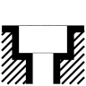
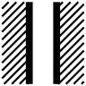
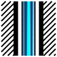
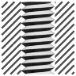
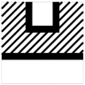
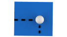

Holes
 | Create a hole optionally with further machining (thread, fit, slot, countersink). → | Solids 2023 |
Create a hole (also possible with parametric modeling) optionally with further machining (thread, fit, slot, countersink). Save the entity as a template in a library and use it again.
A hole configured in Base is marked ‘Base’ on the Model tab. A hole configured in Advanced is labelled ‘Advanced’.
Note
For CAM programming, select the Keep CAD features option in the settings for Feature mapping (hole). Activate if a drilling feature created with this command should be associatively linked to the CAM feature after feature mapping.
Base | Advanced |
|---|---|
Generate quickly | Create complex structure |
Parametric modeling possible | Parametric modeling possible |
Max. 2-step (per feature including editing + countersink) | Multi-step (up to 15 steps/10 opposite steps) |
From one machining direction | Possible with opposite machining direction |
Several tolerances | |
As through bore, with flat hole end or pointed hole end | Also with hidden through or with spherical hole end |
No spot configurable | No spot configurable |
No bottom offset configurable | Bottom offset |
No (ring) groove configurable | Max. 5 (ring) grooves |
Cylindrical only | Also conical or with undercut |
Use variables from the Spreadsheet | No variables from the Spreadsheet can be used |
One user library | Multiple user libraries possible |
Configuration
Library
Save a ready-defined CAD feature as a template in a user-defined library.
Add a CAD feature as a new template to the user-defined CAD feature library. Enter a name and save it with | |||

Base
Create a hole, fit or thread as a CAD feature.
Compose holes
Compose the CAD feature as a hole, thread or fit, with the shape of the end of the hole and any countersink required.
Select whether a countersink is to be inserted and, if so, which one. | without countersink | Countersink |  Counterbore |
Select machining. |  Hole |  Fit |  Thread |
Select feature end shape. |  Conical end shape |  Conical end shape |  Through bore |
Parameter
Enter the specifications for the selected composition of the CAD feature.

Use the graphic in the dialog to enter or change the length of the hole  , the diameters and the angles according to the selected composition.
, the diameters and the angles according to the selected composition.
For threads, take the specifications from the thread table. For fits, take the specifications from the fit table.
Definition: Select a thread type or the tolerance class for a fit.
Designation: Select a thread.
Depth: Enter a length for the thread or fit. The minimum length of a core hole is the length of the thread plus four times the pitch of the thread.
During creation, a preview is displayed in the form of a cylinder for the thread. The finished thread feature is characterized by a helical stylization along the entire length of the core hole. The finished fit feature is characterized by a striped stylization.
Browse: In the catalogue selection, change the stored thread or fit table and select from various standards, such as metric coarse pitch, metric fine pitch, UNC standard pitch and UNC fine pitch.
Thread direction
Select left-hand thread or for the typically used right-hand threads.
Fit / thread
Full depth: Run the length of the thread or fit through the entire feature depth.
Advanced
Create a generic hole as a CAD feature. Choose the Feature parameters. Variables from the spreadsheet cannot be assigned.
Further information can be found in the CAM software documentation under hyperMILL > Feature and macro technology > Feature catalogue >Generic Hole.
Position
Face to be drilled
Face: Select an entity.
Distance from face. The CAD feature is shifted by the specified distance in the feature direction  . Enter a value.
. Enter a value.
Specify the position reference
In Point definition, select the feature center position according to the Reference data. In parametric modeling, the specifications always correspond to the reference entities that may have been changed:
All entries refer only to the area to be machined: | |
Project the snap point in the direction of the shortest distance onto the selected face to be machined. This is to be the projected as the feature center point. Snap: Snap center position. The hole is placed on the snap point. Project: Project the selected snap point as the center position in the direction of the shortest distance on the selected face. The CAD feature remains placed on the selected face to be machined. | |
 | Select two boundaries or edges and determine the distance from each edge. 2 edges: Select two edges and enter the two distances to the edges. |
 | Select the position using the U and V parameters of the selected face’s domain. ImportantNot assignable using a variable from the spreadsheet. Cannot be used for parametric modeling. U: Enter an isoparameter value from 0 to 1. V: Enter an isoparameter value from 0 to 1. |
All entries refer to the face to be machined or, optionally, to another face that is used as a reference. Initially, the entries are automatically related to the area to be machined. If another face is to be used as a reference, reset the selection and select again: | |
Face: Select a reference face. Origin: Select the coordinate origin. Direction: Enter the direction for the X axis by selecting a second point or enter a position so that a direction results from the line between the origin of this selection. Enter the coordinate values for X and Y. | |
Face: Select a reference face. Origin: Select the coordinate origin. Direction: Enter the direction of the angle flanks as a reference for specified angle by selecting a second point or enter a position so that a direction results from the line between the origin of this selection. Enter the coordinate values for the Angle and Distance from the origin. | |
Select a position along an edge at a distance from this edge. Face: Select a reference face. Edge: Select a reference edge or reference boundary. Along edge: Enter a value for a shift of the feature center position along the edge. From distance: Enter a value for the distance of the feature center position from the edge. | |
Face: Select a reference face. Origin: Select the coordinate origin. Direction: Enter the direction of the angle flanks as a reference for specified angle by selecting a second point or enter a position so that a direction results from the line between the origin of this selection. Enter the coordinate values for the Angle and Height from the origin. | |
Specify alignment
Select the orientation of the CAD feature.
Normal to face: The CAD feature is aligned at the selected position in the direction of the face normals of the faces to be machined.
If the CAD feature is not aligned according to the face normals, determine the Direction:
Select  the direction by using an entity, specify it by using 2 points
the direction by using an entity, specify it by using 2 points  or selecting an axis direction of the current workplane (X Wp, Y Wp, Z Wp)
or selecting an axis direction of the current workplane (X Wp, Y Wp, Z Wp)  or enter the direction with a Vector
or enter the direction with a Vector  . The Invert
. The Invert  option inverts the direction.
option inverts the direction.

Library (base)
Either the Library (base) or the Library (advanced) is displayed, depending on the selection of Base or Advanced.
Select a saved CAD feature template from the library. To do so, double-click the required bookmark with the left mouse button. The files can be set up in such a way that a distinction can be made between user-defined CAD features and company-wide defined templates for CAD features.
 | User library: Select a template from the data saved by the user. |
 | Company library: Select a template from the company-wide default settings. |
 | Application library: Select from the generic sample templates provided. |
In the Search line at the top of the tree structure, search for text within this structure. Enter the text to be searched for. Suitable results are displayed as the user is typing. Confirm the entry by pressing the ENTER key. The search history will be saved temporarily. Separate text fragments with spaces to display several different contents at the same time. The search is case insensitive.
Clear: Remove the search string again. To do this, right-click the line to display the context menu: Select the command there.

Open the following commands in the context menu of a user-defined entry:
Rename: Change the name of the template.
Remove configuration: Remove the template.
Edit description: Enter or change information about the template.
Templates are stored under C:\Users\[User]\AppData\Roaming\OPEN MIND\hyperCAD-S\[Version]\SmartShapesConfig\Holes in *.xml files. There is a separate file for every template of each composition of hole type, hole end and countersink. These files can be used for a company-wide preset.
Library (advanced)
Either the Library (base) or the Library (advanced) is displayed, depending on the selection of Base or Advanced.
The name of the user library, which acts as the default configuration container, cannot be changed. CAD features, which are saved as templates in the library (advanced), are inserted into this branch library. They can be dragged and dropped into one of your own branch libraries.
User configurations and user libraries: Select a template from the data saved by the user. Templates can be moved between user libraries using drag-and-drop operations. | |
Company library: Select a template from the company-wide default settings. | |
Application library: Select from the generic sample templates provided. |
Open the following commands in the context menu of a user-defined entry:
Add new user library: Create another user library.
Remove library: Remove a user library. The user library (preset configuration container) cannot be removed.
Apply configuration: Apply the selected template to the selected position. Another option is to double-click with the left mouse button.
Rename: Change the name of the user library or the name of the template.
Remove configuration: Remove the selected user library or selected template.